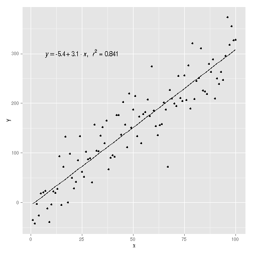
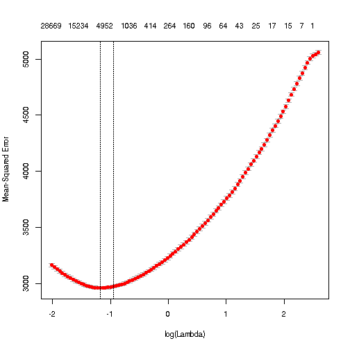
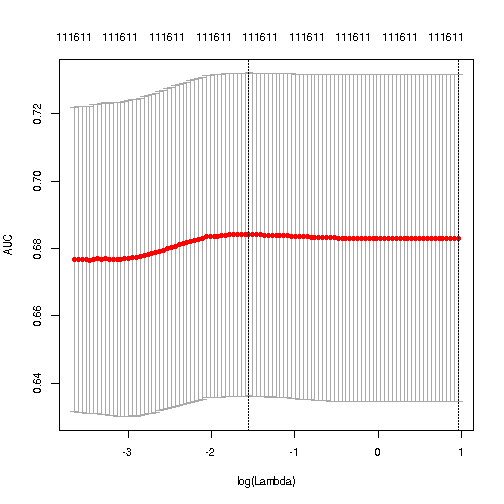

- Feature Vectorization in R
- Distributed Feature Vectorization in R
- Handling New Feature
- Feature Hashing
- Linear Regression with Feature Hashing
- Logistic Regression with Feature Hashing
- Gradient Boosted Decision Tree with Feature Hashing
Wush Wu
Taiwan R User Group

\[X_1 = \begin{bmatrix} 1 & 1\\ 1 & 2\\ 1 & 3\\ \vdots \end{bmatrix}, y = \begin{bmatrix} -34.7604\\ -42.8074\\ -2.9288\\ \vdots \end{bmatrix}\]
\[\hat{\beta} = \begin{bmatrix} -5.4\\ 3.1 \end{bmatrix} = (X_1^T X_1)^{-1}X_1 y\]
\[X_2 \hat{\beta}\]
http://data.computational-advertising.org/
| time | ip | usertag | |
|---|---|---|---|
| 1 | 20130606000104252 | 222.220.35.* | 13800,10024 |
| 2 | 20130606000104253 | 58.100.240.* | 10059,13866,10063,10111 |
| 3 | 20130606000104308 | 122.233.40.* | 10057,10063,10024,13800,13866,10110 |
| 4 | 20130606000104329 | 58.67.157.* | 13866,10111 |
| 5 | 20130606000104371 | 180.107.223.* | 10063,10059,13776,10111 |
m1 <- model.matrix(~ ip, imp.20130606)
| (Intercept) | ip180.107.223.* | ip222.220.35.* | ip58.100.240.* | ip58.67.157.* | |
|---|---|---|---|---|---|
| 1 | 1 | 0 | 1 | 0 | 0 |
| 2 | 1 | 0 | 0 | 1 | 0 |
| 3 | 1 | 0 | 0 | 0 | 0 |
| 4 | 1 | 0 | 0 | 0 | 1 |
| 5 | 1 | 1 | 0 | 0 | 0 |
~ ip~ ip * weekday = ~ ip+weekday+ip:weekday~ .step(object, scope), use the formula to define the testing area of possible combination of features.step.m2 <- model.matrix(~ ip, imp.20130607)
| (Intercept) | ip210.30.109.* | ip221.207.122.* | |
|---|---|---|---|
| 1 | 1 | 0 | 0 |
| 2 | 1 | 0 | 1 |
| 3 | 1 | 1 | 0 |
m1 has 5 columnsm2 has 3 columnsfactor to build a mapping
levels(ip)[1] ==> 1, levels(ip)[2] ==> 2, ...| 180.107.223.* | 183.134.57.* | 210.30.109.* | 221.207.122.* | 222.220.35.* | 58.100.240.* | 58.67.157.* | |
|---|---|---|---|---|---|---|---|
| 122.233.40.* | 0 | 0 | 0 | 0 | 0 | 0 | 0 |
| 180.107.223.* | 1 | 0 | 0 | 0 | 0 | 0 | 0 |
| 183.134.57.* | 0 | 1 | 0 | 0 | 0 | 0 | 0 |
| 210.30.109.* | 0 | 0 | 1 | 0 | 0 | 0 | 0 |
| 221.207.122.* | 0 | 0 | 0 | 1 | 0 | 0 | 0 |
| 222.220.35.* | 0 | 0 | 0 | 0 | 1 | 0 | 0 |
| 58.100.240.* | 0 | 0 | 0 | 0 | 0 | 1 | 0 |
| 58.67.157.* | 0 | 0 | 0 | 0 | 0 | 0 | 1 |
mapping %% 8 + 1
## ip58.67.157.* ip122.233.40.* ip222.220.35.* ip180.107.223.*
## 4 2 7 3
## ip58.100.240.*
## 5
## 8 x 5 sparse Matrix of class "dgCMatrix"
## 1 2 3 4 5
## [1,] 1 1 1 1 1
## [2,] . . -1 . .
## [3,] . . . . -1
## [4,] . . . -1 .
## [5,] . -1 . . .
## [6,] . . . . .
## [7,] 1 . . . .
## [8,] . . . . .
## [,1]
## [1,] "222.220.35.*"
## [2,] "58.100.240.*"
## [3,] "122.233.40.*"
## [4,] "58.67.157.*"
## [5,] "180.107.223.*"
\[\|x^T x' - \phi(x)^T \phi(x')\|\]
suppressPackageStartupMessages({
library(FeatureHashing)
library(dplyr)
})
df <- readRDS("bidimpclk.20131020.Rds")
imp.train <- head(df, 227103) %>%
filter(!is.na(PayingPrice))
imp.test <- tail(df, 100000) %>%
filter(!is.na(PayingPrice))
f <- ~ IP + Region + City + AdExchange + Domain +
URL + AdSlotId + AdSlotWidth + AdSlotHeight +
AdSlotVisibility + AdSlotFormat + CreativeID +
weekday + hour
m.train <- hashed.model.matrix(f, imp.train, 2^20, FALSE) %>%
as("dgCMatrix")
m.test <- hashed.model.matrix(f, imp.test, 2^20, FALSE) %>%
as("dgCMatrix")
suppressPackageStartupMessages({
library(glmnet)
})
cv.g.lm <- cv.glmnet(m.train, imp.train$PayingPrice)
plot(cv.g.lm)
cv.g.lm$lambda.min
# coef(cv.g.lm, s = "lambda.min")
p.lm <- predict(cv.g.lm, m.test, s = "lambda.min")
mean((imp.test$PayingPrice - p.lm)^2)

## [1] 0.3073
## [1] 3416
suppressPackageStartupMessages({
library(glmnet)
})
cv.g.lr <- cv.glmnet(m.train, imp.train$is_click, alpha = 0,
family = "binomial", type.measure = "auc")
plot(cv.g.lr)
cv.g.lr$lambda.min
# coef(cv.g.lm, s = "lambda.min")
p.lr <- predict(cv.g.lr, m.test, s = "lambda.min")
auc(imp.test$is_click, p.lr)

## [1] 0.2121
## [1] 0.699
suppressPackageStartupMessages({
library(xgboost)
})
cv.g.gdbt <- xgboost(m.train, imp.train$is_click, max.depth = 7, eta = 0.1,
nround = 100, objective = "binary:logistic")
p.lm <- predict(cv.g.gdbt, m.test)
glmnet::auc(imp.test$is_click, p.lm)
## [0] train-error:0.000287
## [1] train-error:0.000287
## [2] train-error:0.000287
## [3] train-error:0.000287
## [4] train-error:0.000287
## [5] train-error:0.000287
## [94] train-error:0.000287
## [95] train-error:0.000287
## [96] train-error:0.000287
## [97] train-error:0.000287
## [98] train-error:0.000287
## [99] train-error:0.000287
## [1] 0.6827